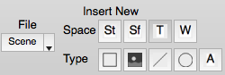
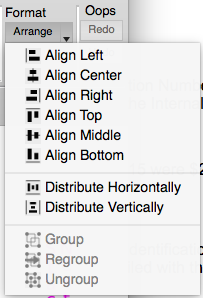

Guide to WB Annotations
04 May 2016

Table of Contents
Annotation Toolbar and Example Annotations
Annotation Line Width and Color
Annotation Text Alignment Property
Annotation Coordinate Property
Editing Annotation Position, Size, and Rotation
Context Sensitive (Pop-up) Menu
Display Control of Annotations
Selection of Annotations in Features Toolbox
Content of Annotations Tab in Features Toolbox
Mouse Selection of Annotations
Annotation Toolbar and Example Annotations

Annotation Coordinate Spaces
Several coordinate spaces are available for annotations. The coordinate spaces control the movement of placement of annotations.
Stereotaxic Coordinate Space
An annotation in stereotaxic space will appear in any display of a surface or a volume. A particular annotation in stereotaxic space may appear in more than one location depending upon the models being viewed.
Stereotaxic space is the three-dimensional coordinate system in which surface and volume models are displayed. In Workbench, the stereotaxic space is in an LPI orientation (negative X is Left, negative Y is Posterior, and negative Z is Inferior). Annotations in Stereotaxic Space will move as the viewed model is panned, rotated, or zoomed. At times, annotations in Stereotaxic Space may not be visible when they are behind a model. Annotations in Stereotaxic Space are always drawn in a plane parallel to the screen.
Note that in a surface montage, text annotations in stereotaxic space are sized using the height of the tab, not the sub-region containing the surface.
Surface Coordinate Space
An annotation in surface coordinate space will appear in any view of the surface to which the annotation is attached. When a surface space is used, the annotation is associated with surface by the combination of a structure identifier, a vertex index, the number of vertices in the surface, and a surface offset. When an annotation is drawn in Surface Coordinate Space, the annotation will maintain its position relative to its surface vertex as the surface is panned, rotated, or zoomed. The surface offset allows one to move the annotation away from the surface along the vertex’s normal vector or a vector that originates and the surface center and points to the surface vertex. At times, annotations in Surface Coordinate Space may not be visible when they are behind a model. Annotations in Surface Space are always drawn in a plane parallel to the screen. Width and Height properties are normalized to the tab containing the Annotation in Surface Space.
Two notes about annotations in Surface Space. First, when inserting a surface annotation, the new annotation may move away from its location and the reason is explained in the section for creating annotations. Second in a surface montage, text annotations in surface space are sized using the height of the tab not the sub-region containing just the surface.
Tab Coordinate Space
An annotation in tab coordinate space is displayed in one tab region and never more than once. Tab Coordinate Space is a two-dimensional space specified with the X- and Y-coordinates that are a normalized within the tab. The Z-coordinate can be used to stack annotations (control the overlap of annotations). A normalized coordinate ranges from zero to one. For the X-coordinate, zero is at the left side of the tab’s drawing region and one is at the right side of the tab’s drawing region. For the Y-coordinate, zero is at the bottom of the tab’s drawing region and one is at the top of the tab’s drawing region. Since the coordinate is “normalized”, the annotation will maintain its relative position as the tab’s region changes in size. In addition to the X- and Y-coordinate, the Tab Coordinate Space also contains a tab number that indicates in which tab the annotation is drawn. Thus, annotations in Tab Coordinate Space are confined to one tab and may not span into another tab. Tab annotations cannot be placed in a tab’s margin. If one desires annotations in a tab’s margin, create the annotation in Window Space.
Window Coordinate Space
The window coordinate space is very similar to the Tab Coordinate Space except that the normalized coordinate is for the window (graphics region). In addition to the X- and Y-coordinate, the Window Coordinate Space also contains a window number that indicates in which window the annotation is drawn.
Types of Annotations
Box
A box annotation is positioned with one coordinate located at the center of the box. The box’s width and height are ‘normalized’ relative to the size of with and height of the tab or window containing the box. Thus a size of one will fill the tab/window horizontally. Boxes support all Coordinate Spaces. Boxes are colored with both a Line and/or a Fill color.
Color Bars
Color bars are a special case of annotations that pictorially describe the mapping of numeric data into a color palette. Color bars are not created like other annotation types but are enabled for display by pressing the color bar button for a row in the Overlay ToolBox’s Layers tab. Positioning of color bars is performed automatically unless the user chooses to manually position them. Editing of color bars is described at the end of this document.
Image
An image annotation is positioned with one coordinate located at the center of the image. The height of image is specified as a percentage of the region containing the image. As the region changes in height, a corresponding change will occur in the height of the image. The width of the image will scale with the height of the image using the aspect ratio of the image when it was associated with the orientation.
Line
A line annotation contains two coordinates with one located at each end point. Both coordinates are always in the same Coordinate Space. Support all coordinate spaces. Lines are colored using the Line Color. Arrows may be added to each of the end points.
Oval
With the exception of the its shape, an oval is identical to a box.
Text
Text annotations contain one coordinate and the text alignment properties control the location of the text relative to the coordinate. Text annotations support all Coordinate Spaces. Text characters are drawn in the Line Color. If a Fill Color is valid (not None), a rectangle is drawn behind the text in the Fill Color. The height of text is specified as a percentage of the region containing the text. As the region changes in height, a corresponding change will occur in the size of the text.
Annotation Properties
|
Property |
Box |
Color Bar |
Image |
Line |
Oval |
Text |
|
Arrow Tips |
|
|
|
Y |
|
|
|
Line Width |
Y |
|
|
Y |
Y |
Y |
|
Line Color |
Y |
|
|
Y |
Y |
Y |
|
Fill Color |
Y |
Y |
|
|
Y |
Y |
|
Text Color |
|
Y |
|
|
|
Y |
|
Text Characters |
|
Y |
|
|
|
Y |
|
Font Name |
|
Y |
|
|
|
Y |
|
Font Size |
|
Y |
|
|
|
Y |
|
Font Style |
|
|
|
|
|
Y |
|
Horizontal Alignment |
|
|
|
|
|
Y |
|
Vertical Alignment |
|
|
|
|
|
Y |
|
Orientation |
|
|
|
|
|
Y |
|
Width |
Y |
Y |
Y |
|
Y |
|
|
Height |
Y |
Y |
Y |
|
Y |
|
|
Rotation |
Y |
Y |
Y |
Y |
Y |
Y |
Annotation Line Width and Color
The Line Width Property controls the line width of Line annotations and the outline width of Box and Oval annotations. The maximum line width may vary on different computers. When multiple annotations are selected with different line widths, the smallest selected line width is displayed followed by a plus symbol (+).
The Line Color Property controls the outline color of a box or oval. It is also used to draw a box around text annotations. To change the color, one presses the small arrow to display a menu from which a named color or a special option is selected. The two special selections are Custom and None. Choosing Custom displays a dialog that allow the user to create a color by adjusting red, green, and blue color components. None inhibits the drawing of a line’s or the box or oval’s outline.
Annotation Fill Color
The Fill Color Property controls the color of a text background or the fill color for a box or oval. Like the Line Color Property there are both Custom and None options.

Annotation Line Arrow Tips

The Annotation Line Arrow Tips section allows the user to add arrow to tips to either or both end points of a a line annotation. The top arrow button adds an arrow to the line’s start and the bottom arrow button adds an arrow to the line’s end.
Annotation Text Characters
The Text Edit Group allows the user to edit the properties of the selected Text Annotation (when one and only one annotation is selected). Multiple lines of text are separated by a “\n” character sequence. One may double-click the text to edit the text in a multi-line editor. In the second row is a combo box allows the user to connect a text annotation in Surface Space to the surface vertex with a line or an arrow. When connecting a text annotation to the surface, the offset in the surface coordinate will need adjustment.

Annotation Text Font Property
Font Properties associated with Text Annotations include the Font Name, the Font Size, the Text Color and options for Bold, Italic, and Underline. When multiple annotations are selected, the first matching font and smallest font size is selected. The Bold, Italic, and Underline buttons are selected only if all selected text annotations have the attribute enabled.

Annotation Text Alignment Property
Text Alignment Properties are available for both horizontal and vertical alignment.
Horizontal Text Alignment selections include Left, Center, and Right. With Left, the annotation’s X-coordinate is on the left side of the text. With Center, the annotation’s X-coordinate is in the horizontal center of the text. With Right, the annotation’s X-coordinate is on the right side of the text.
Vertical Text Alignment selections include Bottom, Middle, and Top. With Bottom, the annotation’s Y-coordinate is located at the bottom of the text. With Middle, the annotation’s Y-coordinate is located in the vertical center of the text. With Top, the annotation’s Y-coordinate is located at the top of the text.
When there are multiple text annotations selected with different alignments, none of the alignment buttons are shown as selected.

Annotation Text Orientation
The text orientation property includes two selections, Horizontal and Stacked. Text characters drawn in Horizontal Orientation are drawn in a left-to-right sequence. Text characters drawn in Stacked Orientation are drawn in a top-to-bottom sequence. If there are multiple text annotations selected with differing orientations, neither of the orientation buttons is shown as selected.

Annotation Coordinate Property
The Coordinate Adjustment Group allows the user to adjust the XYZ-coordinates of an annotation in Stereotaxic, Tab, or Window Space. If the annotation is in Surface Space, selections are provided for the Structure, Vertex Index, and Offset. The offset is the distance of the annotation from its assigned surface vertex along the surface vertex’s normal vector. Line annotations contain coordinates for each endpoint and both sets of Coordinate controls are enabled. Box, Oval, and Text Annotations use one coordinate so only the first set of coordinate controls is enabled.


Located on the left side of the coordinate controls are several alphanumeric characters that indicate the coordinate space of the selected annotation(s). If all of the selected annotations are in the same coordinate space, the letter will be Sf (Surface), St (Stereotaxic) T (Tab, followed by tab numbers), and W (Window). If multiple annotations are selected and they are in different coordinate spaces, a plus symbol (+) is displayed. The coordinate controls are enabled only when a single annotation is selected.
Annotation Width and Height
The Annotation Width and Height Properties control the width and height of Box, Image, and Oval Annotations. Both the width and height are normalized values that range from zero to one where one is the full width/height of the tab or window. For image annotations, adjusting the width (or height) will also change the height (or width) of the image so that the image’s aspect ratio is preserved to prevent distortion of the image.

Annotation Rotation Property
The Annotation Rotation property controls the rotation annotations. The rotation value is in degrees and a positive value rotates clockwise.

Annotation Files
There two mechanisms for saving annotations.
Disk Annotation File
Disk Annotation Files can be opened, saved, added to a Spec File just like other Workbench data files.
Scene Annotation File
The Scene Annotation File is maintained “in memory” and when the user creates a Scene, these annotations become part of the scene. Thus, these annotations can only be displayed when the scene is loaded. A special entry is provided on the Manage/Save Files Window to remove all active Scene Annotations.
Selecting Annotations
To select a single annotation while in Annotations mode, simply move the mouse over the annotation (the cursor will become a “four arrows” symbol) and click the mouse.
To select multiple annotations, hold down the Shift Key while clicking the mouse over an annotation. When the mouse is clicked with the Shift Key down, any other selected annotations remain selected.
If an annotation that is a member of a group is selected, all annotations in
the group become selected.
To deselect all annotations, click the mouse in a region where there is no annotation. If there are multiple annotations selected and one wants to deselect an annotation, click the mouse over the annotation while holding down the Shift Key.
When an annotation is in the selected state, sizing handles are displayed around the annotation. For a Line Annotation, sizing handle symbols are drawn at the end points with a slightly larger square symbol at the first coordinate (head of the arrow). For a Box or Oval Annotation, a box is drawn in the foreground color with sizing handles distributed about the box. When the mouse is moved over a sizing handle, the mouse cursor will change to a symbol that indicates how moving the size handle with the mouse will change the shape of the annotation.
Editing Annotation Position, Size, and Rotation
To move an annotation, first select the annotation and move the mouse over the annotation so that the cursor is the four arrows symbol. Hold down the left mouse button and then drag the mouse to move the annotation to its new location.
To resize a line annotation, first select the line annotation. Next, move the mouse over a sizing handle at either end of the line so that the cursor becomes a “two arrow” symbol. Now, hold down the left mouse button and drag the line end point to its new location.
To resize a box or oval annotation, first select the annotation. Next, move the mouse over one of the sizing symbols so that the cursor becomes a “two arrow” symbol. Now, hold down the left mouse button and drag to change the width and/or height of the shape. Dragging the circular symbol at the corners changes both the width and height of the shape. Dragging the square symbol on a side changes width or height but not both.

To rotate a box, image, oval, or text annotation, first select the annotation. Next, move the mouse over the small rotation handle at the top of the shape (small black circle attached to box around TEXT) at which time the cursor will become a rotation symbol. Now, to rotate the annotation, hold down the left mouse button and drag the mouse away from the annotation to the desired orientation. Think of the rotation handle as a compass pointer and the the mouse pointer as magnetic north. The rotation handle will always point towards the mouse pointer.

Annotations may also be moved, resized, and rotated using the annotation toolbar’s controls while a shape is selected.
The text in a text annotation may be edited by double-clicking the mouse over the text annotation.
Editing (Redo and Undo)

When editing annotations, the user may mistakenly modify or delete an annotation. For these instances, pressing the Undo button will “undo” the last change to an annotation. Redo and Undo can also be used with grouping operations (described later in this document).
Inserting Annotations


When creating annotations, new annotations are placed in either “Scene Annotations” or a Annotation File stored to disk. Scene Annotations are not saved to an annotation file file but instead are added to a scene when a a new scene is created. Note that the user will need to save the scene file. Disk annotation files are saved and opened like other data files.
To create a new annotation, user must first choose the file that will contain the newly created annotation. Second, the user user must choose the Space from the top row of buttons (the selected space is highlighted). Third, the user must press on of the Type buttons in the bottom row to choose the type of annotation that is created. Lastly, the user moves the mouse into the graphics region and the mouse pointer will be a small ‘plus’ symbol. The user must either click the mouse in the graphics region to insert a default annotation for the type or drag the mouse to create a rectangular region that bounds the new annotation. If the location of the new annotation is incompatible with the selected annotation space, a dialog pops up that allows the user to choose a different space or to cancel creation of the annotation. When entering a text annotation, a dialog will always pop-up for entry of the text.
BEWARE that when drawing annotations in surface space, the annotation may move a short distance from where it was drawn. This is caused by the surface offset attribute of the surface coordinate. While the annotation is attached to the surface vertex closest to the mouse click, the annotation is offset by a vector. It is this offset vector that causes the annotation to move. Without the offset vector, surface annotations may be partially or even fully obscured by the surface.
Deleting Annotations

Individual annotations are deleted while in Annotation Mode by clicking the Trash Can Icon in the Annotation Toolbar. One may remove an entire file of Annotations on the Manage/Save Files window.
Format

The arrange menu is used to arrange and format multiple annotations. At least two annotations must be selected for an alignment operation. At least three annotations must be selected for a distribute operation. Alignment and Distribution operations may only be performed on annotations in Tab or Window space.
· Align Left – The selected annotations are moved so that the left edge of each annotation is at the same X-coordinate as the left-most annotation.
· Align Center – The selected annotations are moved so that center X-coordinate of each annotation is at the average X-coordinate of the annotations.
· Align Right – The selected annotations are moved so that the right edge of each annotation is at the same X-coordinate as the right-most annotation.
· Align Top - The selected annotations are moved so that the top edge of each annotation is at the same Y-coordinate as the top-most annotation.
· Align Middle – The selected annotations are moved so that the center Y-coordinate of each annotation is at the average Y-coordinate of the annotations.
· Align Bottom - The selected annotations are moved so that the bottom edge of each annotation is at the same Y-coordinate as the bottom-most annotation.
· Distribute Horizontally – The left-most and right-most annotations do not move. The other annotations are moved so there is equal horizontal spacing between adjacent annotations.
· Distribute Vertically - The top-most and bottom-most annotations do not move. The other annotations are moved so there is equal vertical spacing between adjacent annotations.
· Group - See the description in Annotation Grouping.
· Regroup - See the description in Annotation Grouping.
· Ungroup - See the description in Annotation Grouping.
Context Sensitive (Pop-up) Menu
A pop-up menu is available when the Mode (mouse) is set to Annotate. Items in the menu are enabled only in certain conditions.
Items in the pop-up menu are:
· Cut – Removes the annotation under the mouse and places it onto the annotation clipboard.
· Copy – Copies the annotation under the mouse and places it onto the annotation clipboard.
· Delete – Deletes the annotation under the mouse.
· Paste – Inserts a copy of the annotation on the clipboard at the mouse location. If the mouse location is incompatible with the annotation’s space, a dialog is pops up to change the space or cancel the paste operation.
· Paste and Change Space – Pops up a dialog to choose the space and then pastes a copy of the annotation from the clipboard in the selected space.
· Edit Text – Pops up a dialog for changing the text in a text annotation.
· Group – See the description in Annotation Grouping.
· Ungroup – See the description in Annotation Grouping.
· Regroup – See the description in Annotation Grouping.
Edit Menu
The Window’s Edit Menu is available for some operations.
· Undo – Rolls back the last annotation modification (additional text is added to the Undo item providing information about the modification).
· Redo – Rolls back the last “undo” (additional text is added to the Redo item providing information about the modification).
· Cut – See Cut under Context Sensitive (Pop-up) Menu.
· Copy – See Copy under Context Sensitive (Pop-up) Menu.
· Paste – See Paste under Context Sensitive (Pop-up) Menu.
· Paste Special – See Paste and Change Space under Context Sensitive (Pop-up) Menu.
· Delete – See Delete under Context Sensitive (Pop-up) Menu.
Display Control of Annotations

Controlling the display of annotation is performed using the Annot section in the Features Toolbox.
Options
Display Annotations – Enables and disables the display of annotations in all open windows.
Show Window Annotations in Single Tab View – When checked, annotations in Window space are always displayed. When unchecked, annotations in Window space are only displayed when Tile Tabs is enabled.
Group – Group allows the user to easily switch between several different display selections of annotations.
The display selections for annotations in window space function different than other spaces. Because the ‘Group’ selection is a property of each browser window “tab”, it is not available when drawing Window annotations. Therefore, there is only one display selection for annotations in window space.
Selection of Annotations in Features Toolbox
To select an annotation in the Features Toolbox, the user clicks the mouse over the name of the annotation. The annotation name is selected and all other annotations are deselected. The selected annotation is highlighted in the graphics region. The user may select multiple annotations in the features toolbox by holding down the CTRL (Apple) key or the Shift key. If the CTRL key is held down while the mouse is clicked, the annotation under the mouse is added to the selected annotations. If the Shift key is held down while the mouse is clicked, all annotation from the last selected annotation to the annotations under the mouse are selected.
If the user clicks the name of either group type, Space or User, all annotations in the group are selected. If the user selects the name of annotation that is in a User Group, all annotations in the User Group are selected.
Content of Annotations Tab in Features Toolbox
In the Features Toolbox, annotations are grouped into a hierarchy of File, Group, and Annotations. The hierarchy is collapsed and expanded using the small triangles on the left side of the annotation listing. There are three checkbox states, unchecked, partially checked, and checked. An annotation is either unchecked (not displayed) or checked (is displayed). An Annotation Group (and File) is unchecked when all annotations in the group (file) are unchecked (not displayed); partially checked when some, but not all annotations in the group are checked (displayed), and the group (file) is checked when all annotations in the group are checked (displayed).
For each annotation in the features toolbox, an icon (small image) is displayed between the checkbox and the annotation’s name. This icon may consist of several colors. If the annotation's ‘Fill Color’ is enabled, the background of the icon is the fill color. If the annotation’s line color is enabled, the edges of the icon are drawn in the line color. If the annotation is a text annotation, a small square consisting of the text character’s color is in the center of icon.
Annotation Grouping
Annotations are organized into a hierarchy consisting of File->Group->Annotation. The are two types of groups: Space Groups and User Groups. By default, an annotation is assigned to a Space Group. The user may move annotations from a Space Group to a User Group by performing a ‘Group’ operation. Annotations may also be moved from a User Group to a Space Group by performing an ‘Ungroup’ operation.
Both types of groups may only contain annotations that are in the same coordinate space. Stereotaxic annotations are assigned to one group. Surface annotations are also in one group. There is a group for each tab and a group for each window.
Mouse Selection of Annotations
To select an annotation with the mouse, the user simply clicks the mouse over an annotation. The annotation under the mouse is selected and any other annotations are deselected. To select multiple annotations the user clicks the annotation with the mouse while the Shift key is held down. To deselect all annotations, the user clicks the mouse in an empty region (not over an annotation).
If the user selects an annotation with the mouse and the annotation is in a User Group, all annotations in the User Group are selected.
Creating a User Group
Creation of a user group is allowed when two or more annotations are selected and all of the selected annotations are in the same Space Group. If these conditions are met, the user may create a User Group by selected Group from the Annotation Toolbar’s Format->Arrange Menu. The user may also right click the mouse and select Group from the pop-up menu.
Removing a User Group
To remove a User Group, the annotations in the User Group must be selected (recall that clicking any annotation in a User Group selects all annotations in the User Group). The annotations are returned to a Space Group by selecting Ungroup from the Annotation Toolbar’s Format->Arrange Menu. The user may also right click the mouse and select Ungroup from the pop-up menu.
Recreating a User Group
To recreate a User Group, the user must select at least one annotation that is currently in a Space Group but was previously in a User Group. If these conditions are met, the user may recreate the User Group by selected Regroup from the Annotation Toolbar’s Format->Arrange Menu. The user may also right click the mouse and select Regroup from the pop-up menu. All annotations that were previously in the User Group are moved back to the User Group.
Color Bar Editing
Each overlay contains one color bar that is available when the selected overlay is mapped using a color palette (typically for floating point data). To show a color bar, press the rainbow button under Settings in Overlay ToolBox->Layers. To Edit the color bar, press the wrench icon.


Location and Positioning
This section controls the coordinate space and location within the space for the color bar.
Show Color Bar in Sets the allowable space for the color bar.
Tab – Color bar is restricted to the region in which the tab’s
data is drawn.
Window – Color bar may be anywhere in the window.
Positioning
Auto – Colorbar is automatically positioned in the bottom left corner of the tab/window. If there is more than one color bar, they are vertically stacked.
Manual – Allows the user to manually position the color bar by selected the color bar (click it in Annotations Editing Mode) and dragging it with the mouse or using the coordinate controls in the annotation’s editing toolbar. It is not necessary to switch the Positioning Mode to Manual to move the color bar. Simply select the color bar and drag it with the mouse and the Positioning will immediately change to Manual.
Data Numerics
Data Mode Controls format of numeric above color bar
Data Numeric text above the color bar reflect values within the data.
Percentile Numeric text above the color bar reflect the percentiles within the data.
Sign Only Numeric text above the color bar simply indicate the sign (negative/positive of the data).
Numeric Format Controls the formatting of numeric text above the color bar.
Auto Numeric text will automatically choose decimal or scientific notation and digits right of the decimal point to best represent the data values.
Decimal Numeric text will be in decimal format.
Scientific Numeric text will be in scientific notation.
Dec/Sci Decimals Enabled when Numeric Format is Decimal or Scientific and controls the number of digits right of the decimal point.
Subdivisions By default, the numeric text above the color bar consists of a negative value, zero, and a positive value. Subdivisions is used to add additional values between zero and negative/positive.
Show Tick Marks If checked, a small tick mark is displayed below each numeric text value to indicate its exact position in the color bar.